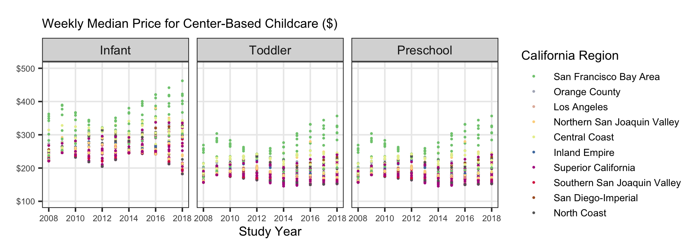

# load librariesLab 8: Childcare Costs in California
Tip
I advise you to focus particularly on:
Setting chunk options carefully.
Making sure you don’t print out more output than you need.
Making sure you don’t assign more objects than necessary. Avoid “object junk” in your environment.
Making your code readable and nicely formatted.
Thinking through your desired result before writing any code.
The Data
In this lab we’re going look at the median weekly cost of childcare in California. The data come to us from TidyTuesday. A detailed description of the data can be found here. You will need to use this data dictionary to complete the lab!
We also have information from the California State Controller on tax revenue for California counties from 2005 - 2018. We compiled the data from this website for you. Note that there is no data for San Francisco County. The variables included in the ca_tax_revenue.csv data file (loaded below) include:
-
entity_name: County name -
year: fiscal year -
total_property_taxes: total revenue in $ from property taxes -
sales_and_use_taxes: total revenue in $ from sales and use taxes
0. Load the appropriate libraries and the data.
# load data
childcare_costs <- read_csv('https://raw.githubusercontent.com/rfordatascience/tidytuesday/master/data/2023/2023-05-09/childcare_costs.csv')Error in `read_csv()`:
! could not find function "read_csv"counties <- read_csv('https://raw.githubusercontent.com/rfordatascience/tidytuesday/master/data/2023/2023-05-09/counties.csv')Error in `read_csv()`:
! could not find function "read_csv"tax_rev <- read_csv('https://raw.githubusercontent.com/r-is-your-friend/course-assessments/main/data/08-ca_tax_revenue.csv')Error in `read_csv()`:
! could not find function "read_csv"1. Briefly describe the data (~ 3 sentences). What information does it contain?
California Childcare Costs
2. Let’s focus only on California. Create a ca_childcare dataset containing (1) county information and (2) all information from the childcare_costs dataset.
a. Sketch a plan for completing this task and include an image of the sketch or write out the steps of your plan in plain English (not with function names!). You should do all of this within one pipeline
b. Implement/code your game plan to create the dataset of childcare costs in California. Checkpoint: There are 58 counties in CA and 11 years in the dataset. Therefore, your new dataset should have 638 observations.
# code for Q23. Now, lets add the tax revenue information to the ca_childcare dataset. Add the data from tax_rev for the counties and years that are already in the ca_childcare data. Overwrite the old ca_childcare data with this dataset. Checkpoint: you are just adding columns here, so your new dataset should still have 638 observations
# code for Q34. Using a function from the forcats package, complete the code below to create a new variable where each county is categorized into one of the 10 Census regions in California. Use the Region description (from the plot), not the Region number (e.g. “Superior California” not “1”). The code below will help you get started.
Code
# defining 10 census regions
superior_counties <- c("Butte","Colusa","El Dorado",
"Glenn","Lassen","Modoc",
"Nevada","Placer","Plumas",
"Sacramento","Shasta","Sierra","Siskiyou",
"Sutter","Tehama","Yolo","Yuba")
north_coast_counties <- c("Del Norte","Humboldt","Lake",
"Mendocino","Napa","Sonoma","Trinity")
san_fran_counties <- c("Alameda","Contra Costa","Marin",
"San Francisco","San Mateo","Santa Clara",
"Solano")
n_san_joaquin_counties <- c("Alpine","Amador","Calaveras","Madera",
"Mariposa","Merced","Mono","San Joaquin",
"Stanislaus","Tuolumne")
central_coast_counties <- c("Monterey","San Benito","San Luis Obispo",
"Santa Barbara","Santa Cruz","Ventura")
s_san_joaquin_counties <- c("Fresno","Inyo","Kern","Kings","Tulare")
inland_counties <- c("Riverside","San Bernardino")
la_county <- "Los Angeles"
orange_county <- "Orange"
san_diego_imperial_counties <- c("Imperial","San Diego")# finish this code for Q4
ca_childcare <- ca_childcare |>
mutate(county_name = str_remove(county_name, " County"))Error in `mutate()`:
! could not find function "mutate"
Tip
I have provided you with code that eliminates the word “County” from each of the county names in your ca_childcare dataset. You should keep this line of code and pipe into the rest of your data manipulations.
You will learn about the str_remove() function from the stringr package next week!
5. Let’s consider the median household income of each region, and how that income has changed over time. Create a table with ten rows, one for each region, and three columns, 2008 income, 2018 income, and region. The cells should contain the median() of the median household income (expressed in 2018 dollars) of the region and the study_year. Order the rows by 2018 values from highest income to lowest income.
Tip
This will require transforming your data! Sketch out what you want the data to look like before you begin to code. You should be starting with your California dataset that contains the regions.
# code for Q56. Which California region had the lowest median full-time median weekly price for center-based childcare for infants in 2018? Does this region correspond to the region with the lowest median income in 2018 that you found in Q4?
Warning
The code for the first question should give me the EXACT answer. This means having the code output the exact row(s) and variable(s) necessary for providing the solution. To answer the second question, compare this output with the output from Q5.
# code for Q67a. The following plot shows, for all ten regions, the change over time of the full-time median price for center-based childcare for infants, toddlers, and preschoolers. Recreate the plot. You do not have to replicate the exact colors or theme, but your plot should have the same content, including the order of the facets and legend, reader-friendly labels, and axes breaks.
TipHints
This will require transforming your data! Sketch out what you want the data to look like before you begin to code. You should be starting with your California dataset that contains the regions.
A point on the plot represents one county and year.
You should use a forcats function to reorder the legend automatically
Try setting aspect.ratio = 1 in theme() if your plot is squished
Again, your plot does not need to look exactly like this one!!
Remember to avoid “object junk” in your environment!

# code for Q77b. Hmmm we can sort of see a pattern but it is a bit difficult with all of the different points for counties and colors for regions. Let’s add a trend line to help! Since there is more than one data point per region, it doesn’t make sense to use geom_line() to add a trend line. Instead, we can add a Loess smooth line for each region. You don’t need to copy-and paste your code from part a, just add Loess smooth lines to the code for your plot above.
WarningDon’t go too hard with
geom_smooth()
The final plot makes use of smoothed lines to help the viewer see patterns over time, that might be difficult by just looking at the points for each county. However, it is important that we have also included the points! The smoothed lines are based on a statistical model, so only including these smoothed lines would be misleading. By including both, the viewer can see how the smoothed lines relate to the original data.
It also wouldn’t make much sense to use a Loess smoother if there was just one point per region and year! In that case, we should just use a line plot with geom_line().